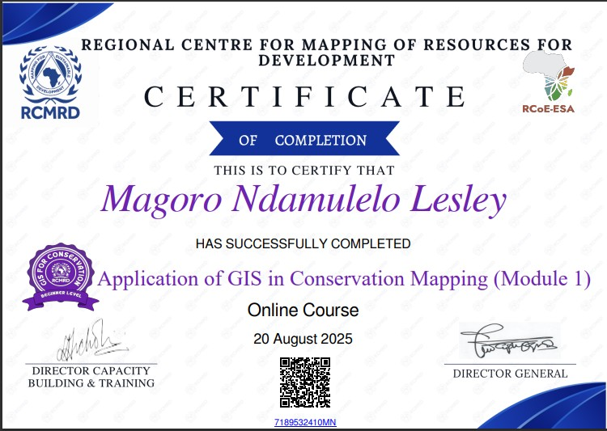
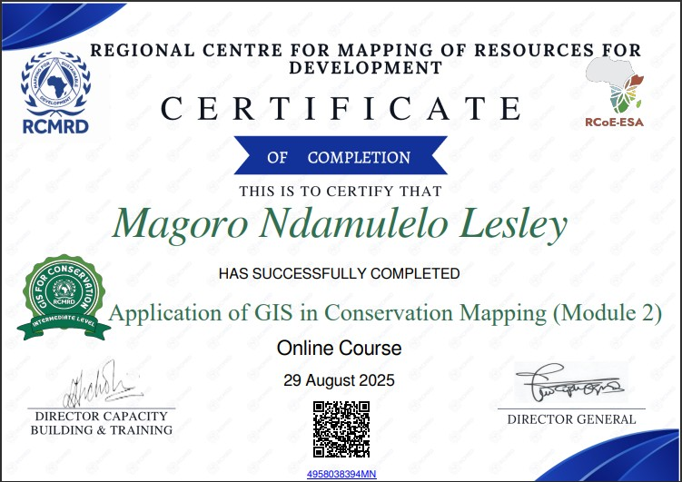
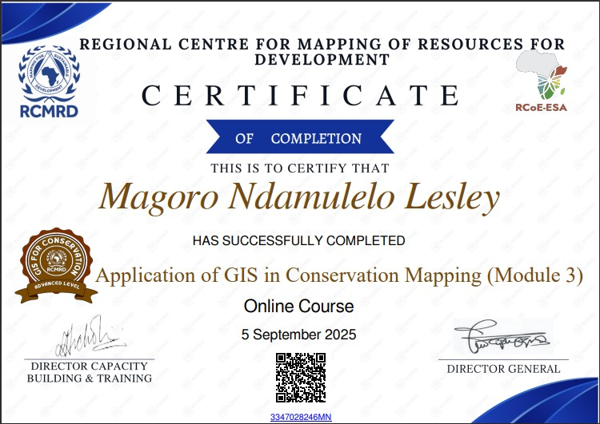

Application of GIS in Conservation Mapping
This professional training focused on the application of Geographic Information Systems (GIS) in biodiversity conservation, habitat monitoring, and protected area management. The course provided practical experience in spatial data analysis, conservation planning, and the use of GIS tools for environmental decision-making
Module 1: Conservation Challenges and Biodiversity Management
- Global conservation frameworks and biodiversity protection targets
- Environmental challenges affecting ecosystems
- Role of GIS in conservation decision-making
- Introduction to conservation mapping principles

Module 2: GIS Tools for Conservation Mapping
- Spatial data collection and management
- Use of ArcGIS Online and GIS software for conservation analysis
- Mapping habitat loss and environmental change
- Spatial analysis techniques for environmental monitoring
- Use of geo-applications for conservation data visualization

Module 3: Habitat Modelling and Monitoring
- Land Use Land Cover (LULC) analysis for conservation planning
- Habitat suitability mapping techniques
- Protected areas database management
- Monitoring environmental change using geospatial data
- Remote sensing applications in conservation monitoring

Module 4: GIS for Wildlife Protection and Conservation
- GIS applications in wildlife conservation and environmental protection
- Environmental risk and hazard mapping
- Wildlife data collection using GPS and mobile GIS applications
- Community engagement in conservation planning
- Participatory GIS (PGIS) for community-based conservation decision-making
- Stakeholder engagement using spatial information

GIS Tools and Applications Covered
- ArcGIS Online
- ArcGIS StoryMaps
- ArcGIS Dashboards
- Mobile GIS data collection applications
- Spatial data visualization tools
- ArcGIS Pro
Key Skills Obtained
- Conservation mapping using GIS
- Spatial data analysis for biodiversity management
- Participatory GIS for stakeholder engagement
- Habitat monitoring using remote sensing
- Environmental decision support using spatial data
- Spatial data visualization and communication